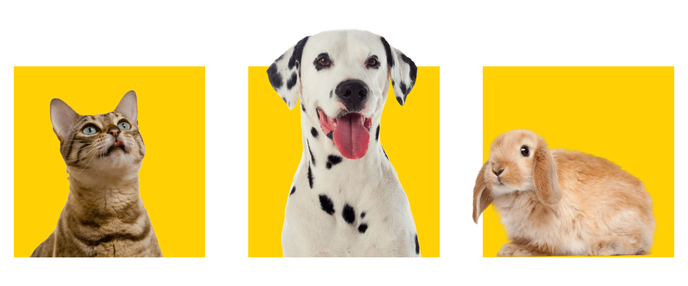
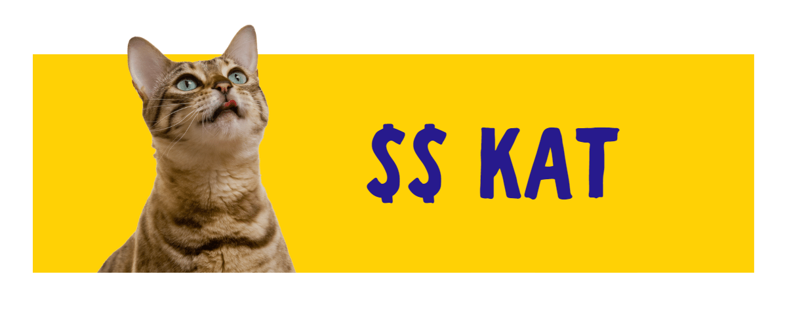
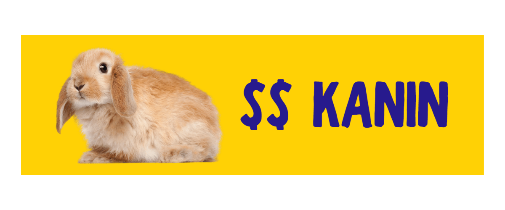

Kan man have kæledyr på SU?
Ja, det kan lade sig gøre
Det korte svar er ja, selvfølgelig kan det lade sig gøre at have et kæledyr mens du er på SU. Alting handler om prioriteringer, og du kan helt sikkert finde plads til det i din økonomi – hvis du vil. Det længere svar er at holde kæledyr indebærer langt mere end anskaffelsen. Derfor har vi kontaktet en pro dyrepasser, som hver dag formidler kæledyr fra et dansk internat.
Vi har vurderet hvor dyre / billige dyrene er og markeret dem som nedenfor.
- $ = Billigt
- $$ = Moderat
- $$$ = Dyrt
Hvilket kæledyr skal jeg vælge?
”Før du overhovedet overvejer at anskaffe dig et dyr, skal du kende dine egne behov. Tænk på hvad du kan tilbyde dyret, og ikke hvad dyret kan tilbyde dig.” Fortæller dyrepasseren.
No way back
Der er no way back, når du først har anskaffet dig et dyr. Derfor skal du være helt sikker i dit valg. Overvej hvor meget tid du har, læg dit budget og se hvor meget du har tilbage, som du kan sætte af til et kæledyr. Forvent altid at det dyr du vælger, har komplikationer alt efter race. For eksempel får huskatte ofte tandsten og den franske bulldog har luftvejsproblemer.
$$ Katten
”Vi formidler flest katte til studerende, da katten er et nemt husdyr. Den kræver ikke lange gåture eller en masse stimulering. Katten er heller ikke et flokdyr, så den vil ikke savne dig som en hund ville.” Fortæller dyrepasseren. Hvad kræver en kat? Katten kræver først og fremmest 3 ting:
- Mad og vand hver dag
- En ren kattebakke
- Legetøj
Katten er ligeglad med hvornår du kommer hjem efter en bytur, så længe den har adgang til de 3 ovenstående ting.
Love og regler
Det er ikke lovpligtigt at vaccinere, chippe og forsikre din kat. Men det kan være en god ide at gøre det alligevel. Hos Dyrenes Beskyttelse kan du adoptere en kat for 1100kr. Den er både chippet, vaccineret og neutraliseret.
$$$ Menneskets bedste ven
Dyrepasseren fortæller at studerende sjældent adopterer hunde. På internaterne er det især store hunde som kommer ind, og de kræver langt mere plads end hvad den typiske studerende kan tilbyde. Men skal du alligevel have en hund så følg med her: Hunden er uden tvivl en af de dyreste kæledyr du kan have inde døre. Den er dyr at anskaffe, dyr i udstyr og kommer ofte med flere komplikationer end andre arter.
Hvad kræver en hund?
Hunden kræver nedenstående for at trives:
- Daglig stimulering både fysisk og psykisk
- Mad og vand hver dag
- Gåture / tisseture både morgen, middag og aften
- Daglig socialisering med dig
Hunden kræver altså mere af dig. Men hvis du er klar til at lægge byturene på hylden og stå tidligere op i weekenderne, så er muligheden der stadig.
De tunge økonomiske poster
Udover den lovpligtige ansvarsforsikring, skal du også medregne følgende ture til dyrlægen: Når hunden er hhv. 12 og 16 mdr.: Basisvaccination 1 og 2, 700kr. pr. gang Årligt vaccination: Fra 800kr. pr. gang Vaccinationer er ikke lovpligtige i Danmark, men hvis du vil gå til hundetræning eller have den passet hos en kennel, er dette altid et krav. Derudover er det uansvarligt ikke at vaccinere sin hund, da det bidrager til at holde de smitsomme sygdomme i omløb. Hos Dyrekassen.dk kan du tegne en ansvarsforsikring fra 48kr. i måneden. Nogle forsikringer vil kræve mere, alt efter valg af race. Hundemad er også dyrere end andre arters foder. Det kan være en jungle at finde rundt i, da alle brands lover noget forskelligt.
$$ Frikaninen, Instagrams nye darling
Kaniner er igen kommet på mode, og denne gang er det ikke kun som udekaniner. Mange holder dem nemlig inde døre i dag, da de er små, bløde, sociale og forholdsvis lette at holde inde døre.
Den forældede kanin
”Kaniner er blevet forsømt i mange år, da vi er blevet opdraget med at kaniner kan leve af hø og foderpilller, på et ganske lille areal. Denne ide er dog meget forældet, og i dag ved vi at kaniner kræver langt mere.” Fortæller dyrepasseren.
Dyrere end du tror, men billigere end de fleste
Kaniner er overordnet billige i drift ift. En hund. De skal have mange hø og flere grøntsager end man tror, så du skal forberede dig på at købe ind efter dens diet. Kaniner som holdes inde døre, skal mindst have 9 kvadratmeter at boltre sig på. Det kan være en god ide at have et lukke til dem når du ikke er hjemme. Kaniner er nemlig meget kloge dyr, og hvis de keder sig, vil de ødelægge karme og ledninger.
Økonomi
Kaniner er koster alt fra 300-1000kr. for de mest almindelige. Det er altid anbefalet at du neutraliserer din kanin, da de ellers vil pisse i din lejlighed for at markere deres territorium. Når den er neutraliseret, vil den kunne lære at gå på kattebakke – det er nemt. Der er ingen love når du anskaffer dig en kanin, men vi anbefaler at du sparer op til vaccinationer og dyrlægebesøg. Husk også at kaniner ofte bliver over 12 år gamle, så overvej om din søde studenter-kanin også er lige så sjov om 12 år, hvor du har godt gang i karrieren og har fuld fart på livet.
Smådyr – søde små og… nemme?
Det er populært at holde smådyr i Danmark, og mange kan nok nikke genkendende til at have holdt hamster eller fisk gennem deres barndom. Vi har samlet de mest populære, som dyrepasseren taler godt for.
$ Hamster
Hamsteren er lille og er ikke dyr i dyrlægeregninger. Den skal have et langt større bur end man forestiller sig. Buret skal mindst være 80x40x35 cm. Hamstre bliver op til 3 år gamle, så de kan fint bo med dig i din studietid. De er ikke sociale dyr, og vil nødigt have en makker i deres bur. Derfor skal du bruge meget tid med din hamster, hvis du vil gøre den tam. Hamstre er omnivorer ligesom mennesker, og du skal derfor altid købe det rigtige foder så de både får frø, kød og grønt.
$ Marsvin
De skal bo to eller flere i et bur. De er nemlig meget sociale og kan ”snakke” med dig, i form af de lyde de laver ved gensyn. Marsvin kan blive lige så store som dværgkaniner, men de kan ikke gå frit. De er nemlig født uden muskler i underlivet, så de vil tisse over alt. Når marsvin bor inde døre skal de have et bur på minimum 5 x 0,8 x 0,4 m.
$$ Akvariefisk
Akvariefisk kan være en smuk udsmykning til din studiebolig. Du kan vælge akvariestørrelse efter ønske, og derefter putte den rette type og mængde af fisk i. Du kan ganske vidst ikke kæle for en fisk, men har du brug for et enkelt hobbydyr, kan fisk være en mulighed. Sørg for altid at sæt tid af til at rengøre dit akvarie, så vandkvaliteten forholdes god. Vær opmærksom på at både fisk, udstyr og elektrisk forbrug er dyrt ved et akvarie.